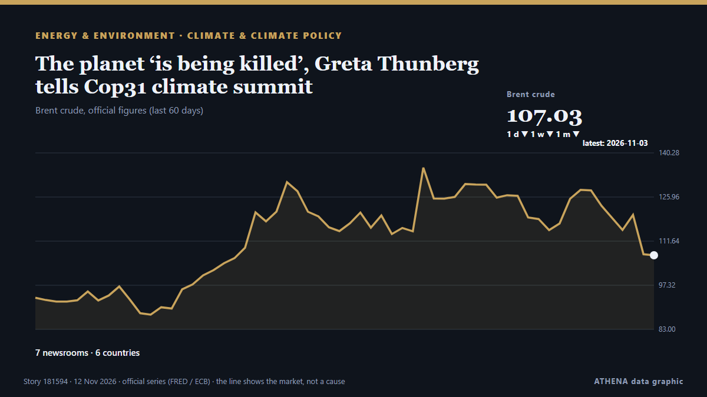

Climate & climate policy
SponsoredPresented by  Cybernetics and Artificial Intelligence Lab Welcome to the Cybernetics and Artificial Intelligence Laboratory, established at the Department of Business Administration of the National and Kapodistrian University of Athens. The lab is headed by Professor Dimitrios Thomakos. The lab aims to do research that can be published in top venues. Our research uses tools and methods of Artificial Intelligence, and lies in the following areas: - Forecasting - Decision making - Cyber security - Finance We are always looking forward to collaborating with exceptional students!
Cybernetics and Artificial Intelligence Lab Welcome to the Cybernetics and Artificial Intelligence Laboratory, established at the Department of Business Administration of the National and Kapodistrian University of Athens. The lab is headed by Professor Dimitrios Thomakos. The lab aims to do research that can be published in top venues. Our research uses tools and methods of Artificial Intelligence, and lies in the following areas: - Forecasting - Decision making - Cyber security - Finance We are always looking forward to collaborating with exceptional students!
| 30 Oct | 0 |
|---|---|
| 31 Oct | 0 |
| 1 Nov | 0 |
| 2 Nov | 0 |
| 3 Nov | 0 |
| 4 Nov | 0 |
| 5 Nov | 0 |
| 6 Nov | 1 |
| 7 Nov | 2 |
| 8 Nov | 2 |
| 9 Nov | 5 |
| 10 Nov | 5 |
| 11 Nov | 7 |
| 12 Nov | 2 |

The planet ‘is being killed’, Greta Thunberg tells Cop31 climate summit
Swedish activist criticised world governments for their failure to prevent environmental breakdown The planet is “not dying, it is being killed and we know by who”, said Greta Thunberg, who… from The Guardian
Iran wants compensation for environmental damage from US-Israeli strikes
'We expect the global community to establish a genuine and meaningful link between climate commitments in times of peace and responsibility in times of war,' says Iran's President Masoud Pezeshkian. from Rappler
Scientists predict 2026 hottest year on record as COP31 summit begins
By Nana Karikari, Senior Global Affairs Correspondent The world is on course for its hottest year in recorded history as the planet is hit with warming from climate change and El Niño. from GBC Ghana Online
Burnham Heads to COP31 Torn Between Cheaper Power and Net Zero
Andy Burnham will face difficult decisions on energy policy against the competing pressures of sky-high industrial costs and Labour’s net zero commitments. from OilPrice.com
Erdogan meets Bosnia-Herzegovina presidency members at COP31 in Antalya
In the evening, Tarique Rahman will attend a dinner hosted by Turkish President Recep Tayyip Erdogan in honour of world leaders attending the summit. from The Business Standard (Bangladesh) (working feed)
Afghanistan's olive groves give farmers relief from climate crisis
The United Nations Climate Change Conferences (COP) are among the most important international forums for examining the impacts of climate change, coordinating global efforts to address the crisis… from Khaama Press
UN chief urges world to end fossil fuel addiction at COP31
UN chief António Guterres called for a new global climate justice agreement at COP31 on Wednesday, urging governments to tax fossil fuel companies to help countries bearing the brunt of a crisis they… from UN News
ExxonMobil launches legal challenge to EU carbon capture rules
US oil company invokes investment treaty to challenge Brussels’ green regulations and seek suspension of timing requirements. from Financial Times - Markets
The US quit global climate talks. Other nations are trying to fill the void.
A data center project under construction in Johor Darul Takzim, Malaysia on Oct. from The San Juan Daily Star
Climate action must continue even if 'US is not here', Pacific leaders say
The United States government has no official presence at the climate talks in Türkiye, marking the second consecutive year the Trump administration has skipped the annual summit. from RNZ Pacific
Climate crisis is ‘outrunning us’, UN chief warns COP31
Antonio Guterres says the world is heading towards mutually assured destruction, citing rising emissions, global temperatures and worsening climate-related disasters. from Free Malaysia Today
Iran president accuses US, Israel of causing environmental damage during war
Iranian President Masoud Pezeshkian accused the United States and Israel of inflicting severe environmental damage during attacks on the Islamic republic, in his speech on Wednesday at the UN Climate… from The Korea Times
Kingdom, Australia back $24M water and climate programme
Cambodia and Australia are strengthening cooperation on climate resilience and water resource management, with a new steering committee meeting aimed at improving institutional coordination… from Khmer Times
Oil prices are so high that CO2 emissions from fossil fuels are dropping
It's not quite a victory for humanity's transition to renewables. from Science News
Bureau Veritas upgrades VeriSTAR Green emissions platform
Bureau Veritas Marine & Offshore has launched an upgraded version of its VeriSTAR Green platform. from Container News
Türkiye reveals two new oil fields as COP31 opens in Antalya
Türkiye will use music, dance and art to bring its climate message to a global audience during the U.N. from Daily Sabah
COP31 opens in Türkiye with calls to turn climate pledges into action
The world is on track to miss climate targets, and governments are grappling with the consequences of climate change. from Council on Foreign Relations
World entering ‘age of climate extremes’, says UN chief
Antonio Guterres urged leaders at the COP31 climate conference in Turkey to 'get serious'. from Free Malaysia Today